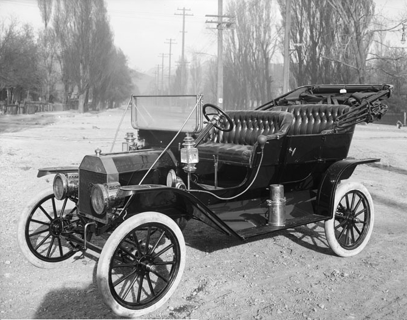

Ford Timeline
1903 - Ford Motor Company Founded
Henry Ford and a group of investors founded Ford Motor Company in Detroit, Michigan.
1908 - Model T Released
The Model T became famous for making cars more affordable to many Americans.
1913 - Moving Assembly Line
Ford introduced a moving assembly line, which made the production of vehicles faster.
1948 - First F-Series Truck
Ford introduced its first generation of F-Series trucks.
1964 - Mustang Introduced
Ford introduced the Mustang, which would become one of its most recognizable cars.
Famous Ford Vehicles
Ford Model T

Photo: Harry Shipler (public domain)
The Model T helped bring automobiles to more people.


Ford F-150

Photo: Deathpallie325 (CC BY-SA 4.0)

The F-Series is a major part of Ford's history with pickup trucks.
Ford Today
Ford continues to make trucks, SUVs, performance cars, and electric vehicles.
To see more information, visit the official Ford history website.